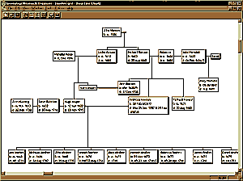

|  | You've never seen a genealogy program do THIS before! Genealogy Research Organizer is a program for Windows 98 that lets you manage your genealogy data. Even complex family relationships become instantly clear, with GRO's intuitive drop-line chart. You can arrange your ancestors as you desire, and GRO automatically draws the lines between individuals representing their relationship. Just double-click an individual to see all of his or her events, attributes, partners, and children. |
Look at some of the unique and powerful features of Genealogy Research Organizer: